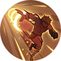
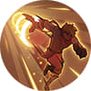

1. Passive After every few basic attacks, Badang's next attack deals extra damage and knocks enemies back.
2. Skill 1Badang punches forward, dealing damage to enemies in a straight line.
3. Skill 2 – Badang dashes to a target location, knocking back enemies and creating a wall.
4. Ultimate –Badang unleashes a barrage of punches, dealing continuous damage to enemies in front of him.

 


1. Passive – Hero’s Resolve: Lukas builds Resolve over time and by damaging enemies. When full, he can transform into his powerful Sacred Beast form.
2. Skill 1 – Flash Combo: Unleashes a combo attack that stuns and damages enemies, healing Lukas when it hits enemy heroes.
3. Skill 2 – Flash Step: Lukas dashes in a direction, empowering his next attack to strike enemies from behind, increasing his attack and movement speed.
4. Ultimate – Unleash the Beast: Transforms into his Sacred Beast form, boosting his attributes and empowering all his abilities for stronger attacks and better battlefield control.


1. Passive Effect: Zhuxin's skills apply Soul Snare stacks to enemies. Upon reaching a certain number of stacks, enemies are immobilized and take additional damage.
2. Effect: Zhuxin deals Magic Damage to all enemies in a fan-shaped area and applies 1 stack of Soul Snare. She also steals Movement Speed from all enemy heroes hit.
3. Skill 2 – Effect: Holding the button, Zhuxin continuously consumes Mana while the Spirit Lantern can be moved with the skill button, dealing Magic Damage to all enemies within range and applying Soul Snare to enemy heroes hit.
4.Effect: Zhuxin blinks to the target location while gaining a shield. While flying, she creates a field around her. The field deals Magic Damage and applies Soul Snare stacks to enemies.


1. Passive Effect: Zhuxin's skills apply Soul Snare stacks to enemies. Upon reaching a certain number of stacks, enemies are immobilized and take additional damage.
2. Effect: Zhuxin deals Magic Damage to all enemies in a fan-shaped area and applies 1 stack of Soul Snare. She also steals Movement Speed from all enemy heroes hit.
3. Skill 2 – Effect: Holding the button, Zhuxin continuously consumes Mana while the Spirit Lantern can be moved with the skill button, dealing Magic Damage to all enemies within range and applying Soul Snare to enemy heroes hit.
4.Effect: Zhuxin blinks to the target location while gaining a shield. While flying, she creates a field around her. The field deals Magic Damage and applies Soul Snare stacks to enemies.